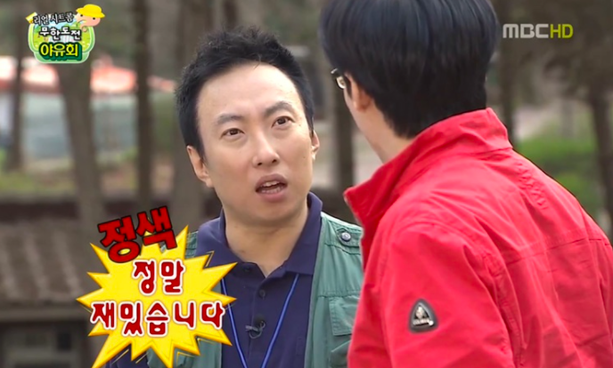
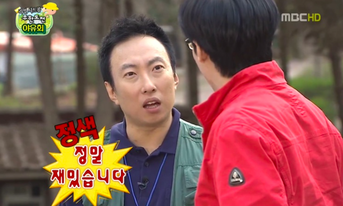
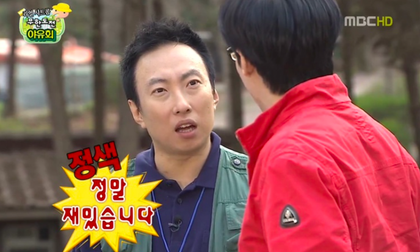

[스포티비뉴스=장다희 기자]
배우 고두심이 한지민에게 결혼을 권유했다.
29일 방송된 채널A, LG헬로비전 예능 '고두심이 좋아서'에서는 드라마 '우리들의 블루스'에서 고두심과 함께 호흡을 맞춘 한지민이 출연했다.
한지민은 자신의 인생 장르에 대해 "코미디"라고 밝혔다. 그는 "나는 웃기는 걸 좋아하고, 재밌는 걸 좋아해서 일 할 때는 같이 일하는 스태프들이랑 재밌게 하고 싶고, 잠깐 만나는 것도 즐겁게 하고 싶다"고 말했다.
이에 고두심은 "그거 굉장히 중요해"라며 "이 다음에 남편을 만나더라도 재밌는 사람이랑 만나야 한다"고 결혼을 언급했다.

| 종류 | 원산지 |
|---|---|
| 녹차 | 보성 |
| 제주 | |
| 우롱차 | 제주 |
| 오렌지 | 캘리포니아 |
| 키위 | 제주 |
| >맺음말 |
| 종류 | 원산지 |
|---|---|
| 녹차 | 보성 |
| 제주 | |
| 우롱차 | 제주 |
| 오렌지 | 캘리포니아 |
| 키위 | 제주 |
| 맺음말 |